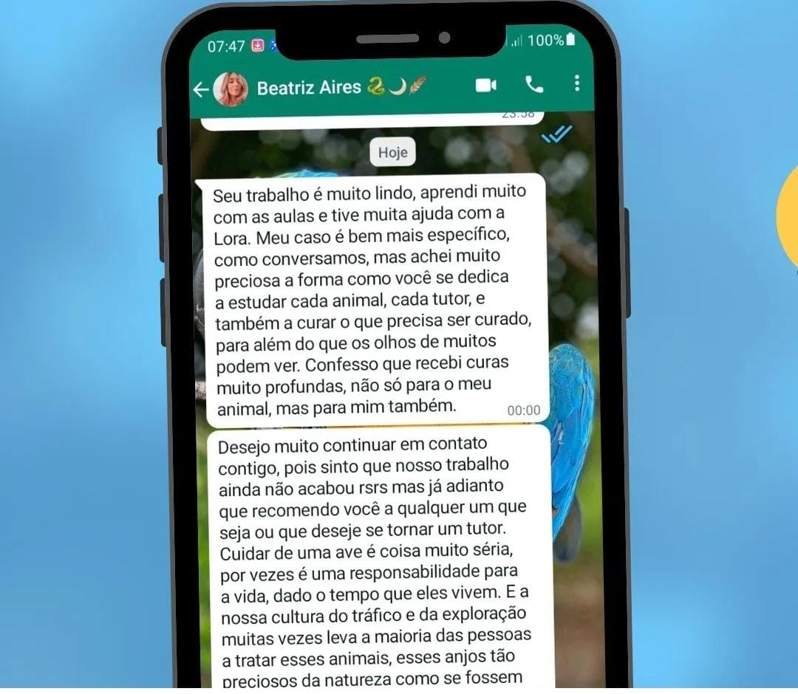

Medicina Veterinária
Formação em Medicina Veterinária com atuação voltada ao comportamento e à reabilitação animal.

Comportamento, manejo e reabilitação com respeito à história, à comunicação e às necessidades de cada animal.
Minha trajetória une formação veterinária, experiência prática e estudo do comportamento animal, com uma atuação especialmente voltada para aves e equinos.
Meu trabalho parte da compreensão de que cada animal possui uma história, uma personalidade e uma forma própria de se comunicar.
Por isso, busco desenvolver estratégias individualizadas de manejo, treinamento, reabilitação e construção de vínculo.
O comportamento deve ser compreendido considerando as experiências e características individuais de cada animal.
O vínculo se constrói com escuta, conhecimento e atenção às experiências de cada animal. Essa perspectiva orienta o trabalho com aves e equinos.
Uma experiência de acolhimento e conexão dedicada à compreensão das dimensões emocionais que envolvem a relação entre humanos e animais.
A sessão propõe um espaço de escuta, reflexão e reconexão, buscando compreender dores emocionais, padrões comportamentais e aspectos que podem influenciar o bem-estar e a qualidade dos vínculos.
Por meio de uma abordagem psicoespiritual integrativa, são unidas escuta, autoconhecimento e práticas energéticas, proporcionando um momento de acolhimento, consciência e conexão interior.

Mentora | Espiritualista | Médica-veterinária
Uma trajetória dedicada ao estudo do comportamento, dos vínculos e das dimensões emocionais que atravessam a relação entre humanos e animais.
Seu trabalho parte de um olhar integral sobre o cuidado, valorizando a escuta, a consciência e a compreensão das diferentes dimensões que fazem parte dessa relação.
O caminho da reconexão começa quando nos permitimos olhar para além dos sintomas e acolher aquilo que precisa ser compreendido.
Um convite para desacelerar, perceber, compreender e fortalecer os vínculos que realmente importam.
Formação em Medicina Veterinária com atuação voltada ao comportamento e à reabilitação animal.
Especialização em Clínica Cirúrgica e Comportamento de Animais Silvestres.
Especialização em Comportamento e Manejo Equino.
Experiência e especialização em traumas, distúrbios comportamentais e reabilitação de aves.
Estudos de Psicanálise aplicada ao comportamento animal.
Mestre em Práticas Integrativas.
Há 8 anos atuo diretamente na reabilitação e treinamento de aves, acompanhando animais com diferentes históricos, dificuldades comportamentais e experiências traumáticas.
Ao longo dessa trajetória, foram mais de 2.000 resultados em atendimentos online, envolvendo aves treinadas e reabilitadas.
Minha abordagem considera as características individuais de cada animal e busca compreender sua comunicação, seu histórico e suas necessidades.
Programas criados a partir da experiência prática, estudo e acompanhamento do comportamento animal.
Acompanhamento e orientação voltados à relação entre tutores e seus animais.
Conversar sobre o programaPrograma relacionado à interação, comportamento e vínculo com equinos.
Conversar sobre o programaConteúdos e acompanhamento relacionados ao treinamento e comportamento de aves.
Conversar sobre o programaUma abordagem dedicada à construção de vínculo e compreensão comportamental.
Conversar sobre o programaEstudos e práticas voltados à comunicação e interpretação do comportamento animal.
Conversar sobre o programaNovos conteúdos estão sendo preparados. Enquanto isso, acompanhe as publicações e conversas nas redes sociais.
A atuação tem atenção especial a aves e equinos, além dos programas de acompanhamento relacionados a pets.
Entre em contato pelo WhatsApp para conversar sobre os programas e saber mais sobre a proposta que melhor atende à sua necessidade.
Acompanhe as redes sociais da Dra. Janaína pelos links nesta página. A seção de conteúdos será atualizada quando novas publicações estiverem disponíveis.
Autora do projeto científico dedicado ao estudo do comportamento de aves silvestres e exóticas considerando suas experiências anteriores.
Quer saber mais sobre comportamento, saúde emocional e bem-estar do seu pet? Entre em contato ou acompanhe meus conteúdos nas redes sociais.
Acompanhe conteúdos, formações e projetos relacionados ao comportamento animal.
Entrar em contato